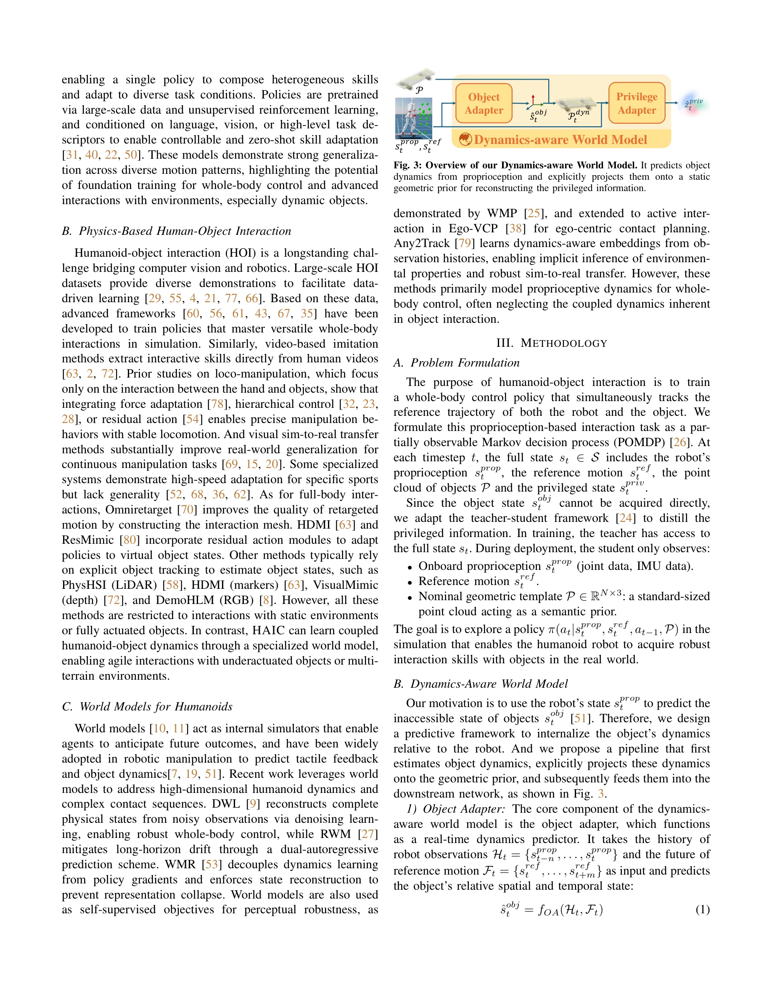
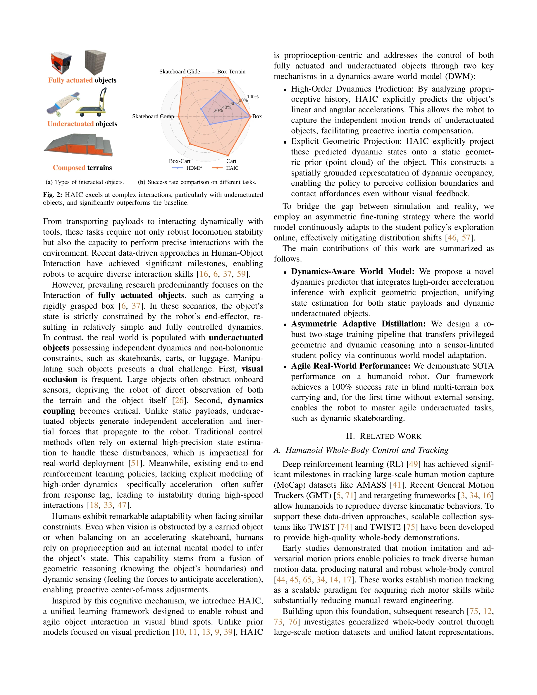

저자: Dongting Li, Xingyu Chen, Qianyang Wu, Bo Chen, Sikai Wu, Hanyu Wu, Guoyao Zhang, Liang Li, Mingliang Zhou, Diyun Xiang, Jianzhu Ma, Qiang Zhang, Renjing Xu | 날짜: 2026-02-12 | DOI: 10.48550/arXiv.2602.11758

Fig. 3: Overview of our Dynamics-aware World Model. It predicts object
HAIC는 humanoid 로봇이 독립적인 동역학을 가진 미작동(underactuated) 물체와 상호작용할 수 있도록 dynamics-aware world model을 통해 proprioception만으로 고차 가속도를 예측하고 기하학적 projection을 통해 시각 blind spot에서도 강건한 제어를 실현한다.

Fig. 2: HAIC excels at complex interactions, particularly with underactuated
Fig. 3: Overview of our Dynamics-aware World Model. It predicts object
총평: 본 논문은 humanoid 로봇의 underactuated 물체 상호작용이라는 현실적으로 중요한 문제를 proprioception 기반의 창의적인 dynamics prediction과 geometric projection으로 우아하게 해결하며, 실제 로봇에서 SOTA 성능을 입증한 매우 강력한 기여이다.